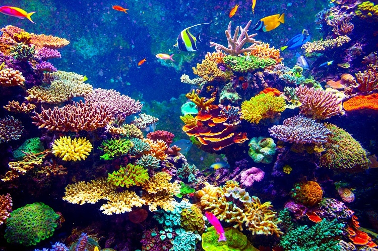
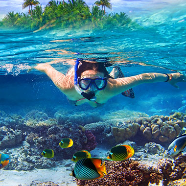

Hikkaduwa Coral garden and Beach

Coral Garden
A coral reef is an underwater ecosystem characterized by reef-building corals. Reefs are formed of colonies of coral polyps held together by calcium carbonate. Most coral reefs are built from stony corals, whose polyps cluster in groups.In the Hikkaduwa National Park, there are many corals which attrack the attention of both local and foreign travellers.

